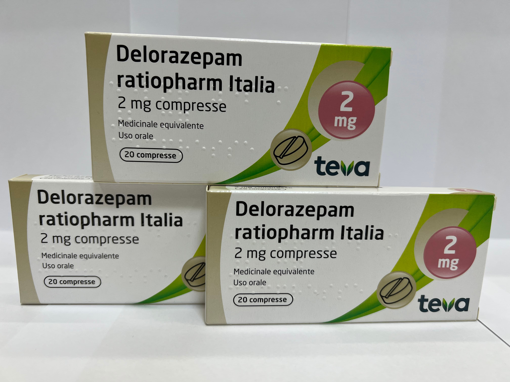

Контактная информация:
Цена: 650 грн/уп.
В наличии
Производитель: Италия
Цена: 650 грн/уп.
В наличии
Именно в FarmItal вы можете купить таблетки Delorazepam, Делоразепам 2мг в Украине, Гарантированно Качественный!
Доставка Delorazepam осуществляется транспортными компаниями, сроки выполнения заказа оговариваются менеджером Фармитал. Вы можете заказать Делоразепам в городах: Одесса, Херсон, Чернигов, Северодонецк, Бердянск, Бровары, Днепр, Винница, Киев, Славянск, Полтава, Краматорск, Белая Церковь, Каменское, Мариуполь, Черновцы, Александрия, Каменец- Подольский, Львов, Запорожье, Кропивницкий, Житомир, Ивано-Франковск, Сумы, Черкассы, Константиновка, Мелитополь, Кривой Рог, Ровно, Луцк, Никополь, Павлоград, Ужгород, Кременчуг, Лисичанск, Хмельницкий, Тернополь, Харьков, Николаев, а также других населенных пунктах Украины.
Делоразепам выпускается в форме таблеток.
Таблетки Делоразепам выполнены на основе Делоразепама.
Вспомогательными компонентами таблеток являются лактоза, моногидрат; целлюлоза микрокристаллическая; магния стеарат; калия полакрилин.
Действующее вещество делоразепам относится к препаратам бензодиазепинового ряда. Это транквилизатор средней продолжительности действия, обладающий терапевтическим действием уже в низких дозах. Анксиолитическое действие и антиконвульсивный эффект делоразепама в высоких дозах имеют выраженный характер, а седативный и особенно миорелаксантный эффекты относительно слабы. Путем ослабления эмоциональных факторов делоразепам устраняет условия для возникновения болезней, вызванных эмоциональными и психореактивными факторами. При однократном приеме на ночь препарат оказывает снотворный эффект.
При лечении передозировки каким-либо лекарственным средством следует учитывать возможность одновременного приема других веществ. Как и в случае с другими бензодиазепинами, передозировка не угрожает жизни, если не принимать одновременно другие средства, подавляющие ЦНС (включая алкоголь).
Передозировка бензодиазепинов обычно проявляется разной степенью угнетения ЦНС от онемения к коме. В легких случаях симптомы включают сонливость, усталость, атаксию, нарушение зрения, сонливость, спутанность сознания и вялость. В тяжелых случаях симптомы могут включать глубокий сон, потерю сознания, атаксию, гипотонию, гипотонию, угнетение дыхания, редко кому и очень редко смерть.
Хранить в недоступном для детей месте.Хранить в защищенном от влаги месте при температуре не выше 25 °C.